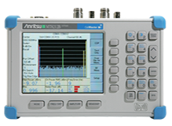
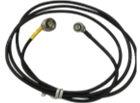
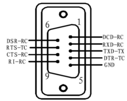
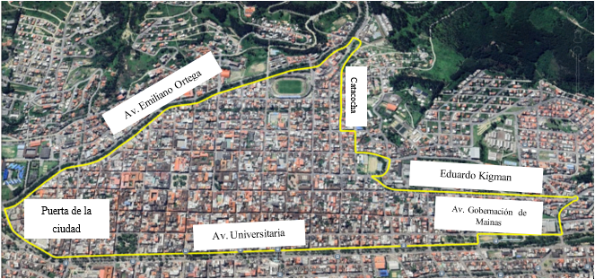
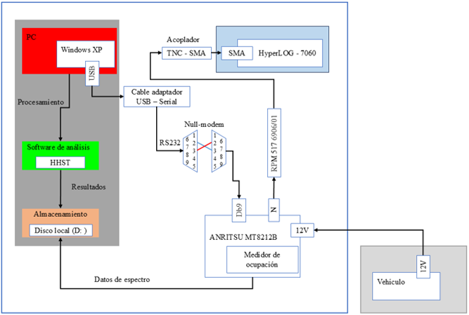
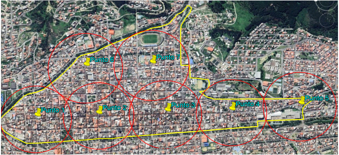
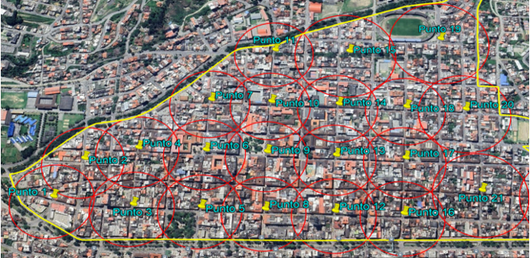
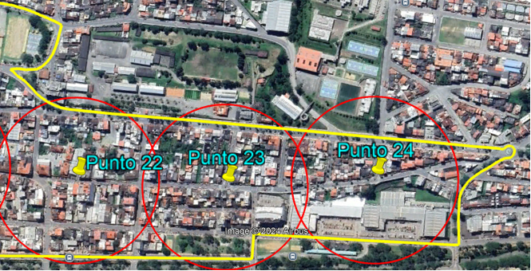
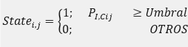

Su función básica es representar las señales en una pantalla gráfica como amplitud (o como nivel de potencia) en el eje "y", frente a la frecuencia en el eje "x", las amplitudes de las señales detectadas se representan en el dominio de la frecuencia (rohde&schwarz, s.f.).
Caracteristicas del analizador de espectro
| Parámetros | ANRITSU MT8212B |
|---|---|
|  | |
| Rango de Frecuencias | 100 KHz - 3.0 GHz |
| Sencibilidad | -135 dBm con pre-amp, -115 dBm sin pre-amp |
| Alimentación | DC 12V |
| Batería | 1800 mA NiMH |
| Software | Compatible con Handheld Software Tools |
| Espectrograma | Incorporado en el equipo, portabilidad |
| Almacenamiento | Hasta 200 trazos |
| Comunicación con PC | USB – RS232 DB9 NULL MODEM |
| RF IN | Tipo N 50 ohm |
Para lograr una correcta asimilación de la radiación dispersa en el medio ambiente, se precisa de una antena que tenga una buena ganancia y considerable ancho de banda, que se relaciona con el alcance o la superficie que puede cubrir, permitiendo obtener mayor precisión y mejorando la calidad de los datos presentes en el estudio.
Características de la antena
| Parámetros | HyperLOG 7060 |
|---|---|
| Directividad | Direccional |
| Diseño | Log-periodical |
| Ganancia(typ.) | 5dBi |
| Conexión RF | SMA (f) o N con adaptador |
| Rango de frecuencia | 700 MHz – 6 GHz |
| Impedancia nominal | 50 ohm |
| VSWR (typ.) | < 2 |
Según la recomendación de la (UIT-R, 2016) para que los resultados sean válidos dentro de un determinado radio respecto del lugar de observación, es necesario utilizar una antena no direccional.
En los casos que se indican a continuación se habrá de utilizar una antena de medición direccional:
En vista de las condiciones planteadas para el uso de antenas direccionales, se ha considerado la geografía de la ciudad de Loja, su superficie irregular con elevaciones pronunciadas provoca variaciones significativas en la propagación de la señal, esto hace que el uso de la antena Hyper-LOG HF-7060 de la marca AARONIA, se considere como la mejor opción para obtener mediciones precisas, ya que, permite enfocar la señal en zonas específicas
El cable tiene un impacto directo en la calidad de la señal y la precisión de las mediciones, un buen cable lleva las señales captadas por la antena al analizador sin degradaciones significativas, lo que reduce errores asociados a la interferencia o perdidas excesivas.
Características del cable de radiofrecuencia
| Parámetros | RPM 517 6906/01 |
|---|---|
|  | |
| Tipo de cable | Coaxial de alto rendimiento |
| Frecuencia | Hasta 6 GHz |
| Impedancia | 50 ohm |
| Perdidas (dB/m) | 0.14 dB/m – 0.25 dB/m |
| Pantalla de blindaje | Alta (cobre trenzado + hoja de cobre) |
| Conector | N - TNC |
| Aplicaciones | Medición de precisión en altas frecuencias |
La gestión de las mediciones realizadas con el ANRITSU, necesitan una unidad externa que realice la función de procesamiento y almacenamiento de datos, esta unidad debe ser compatible con el analizador de espectro, ya que, el modelo MT8212B funciona con el programa Handheld Software Tools desarrollado y soportado hasta el año 2007, compatible con los sistemas operativos Windows XP y Windows Vista de 32 bits (Anritsu, 2015).
El cable adaptador permite tener una comunicación bidireccional entre el analizador de espectro y la computadora encargada del almacenamiento y procesamiento de las mediciones, el cable debe tener la característica de ser Null Modem véase la figura 7, sin esta característica el analizador no puede entrar al funcionamiento remoto, y los archivos .SPG no se pueden descargar .
Pines del cable Null-Modem
Para el proceso de medir y evaluar la ocupación en las bandas 915MHZ y 2.4GHz, en el presente estudio se implementó la recomendación de la (UIT-R, 2016), la cual plantea una estructura detallada para el proceso, con diferentes parámetros a considerar para presentar los datos de la utilización racional, equitativa y eficaz del espectro. A continuación, se detallan los parámetros que influyen de forma directa en el estudio.
El presente Trabajo, se desarrolló en el casco urbano central de la ciudad de Loja (regeneración urbana), abarcando aproximadamente 170 hectáreas, esta área se caracteriza por la convergencia de la mayoría de actividades comerciales, educativas y culturales de la ciudad (UTPL, 2023), que comprende las calles: Av. Universitaria, chile, 18 de Noviembre, Av. Gobernación de Mainas, Eduardo Kigman, Sozoranga, Gonzales Suarez, José Joaquín de Olmedo, Andrés Bello, Juan José Peña, Catacocha y la Av. Emiliano Ortega. A continuación, se define y delimita el área de estudio y se presentan las calles más relevantes que encierran esta superficie geográfica.
Delimitación geográfica del casco urbano central
El sistema completo de monitoreo se lo detalla en la figura, en donde se plantea las diferentes interconexiones que se van a tener para el correcto desempeño de los equipos.
Arquitectura del sistema de mnitoreo
Tal como indica la (UIT-R, 2016), por zona de medición se entiende la zona en la que los resultados de la ocupación son válidos, es decir, el grado de la ocupación se considera representativo de cualquier lugar dentro de la zona de medición, no solamente del lugar donde se encuentra la antena de comprobación técnica.
Para determinar la ocupación dentro del área de estudio, se la dividió en diferentes puntos que vendrían a ser las zonas de medición, considerando varios parámetros, como la actividad comercial, el tránsito peatonal, el uso del espacio (comercial o residencial) y la cobertura de los instrumentos de medición.
La cobertura de los instrumentos se determina aplicando el modelo de propagación Walfisch-Bertoni, también conocido como “modelo de pantallas de difracción”. Este modelo permite estimar las pérdidas de propagación en ambientes urbanos considerando la difracción de la señal en el techo de los edificios. El modelo de Walfisch-Bertoni es aplicable para las frecuencias comprendidas entre 300 MHz y 3 GHz (Pérez et al., 2012).
L(dB) = 89.55 + A + 21 log(f) + 38 log(d) - 18 (heb - hed) - 18 log[1 - d²/17(heb - hed)]
Donde A es el factor que incorpora las perdidas por efecto de los edificios y se determina de la siguiente manera:
A = 5 log[(w/2)² + (hed - hm)²] - 9 log(w) + 20 log{tan⁻¹ [2(hed - hm)/w]}
Donde:
heb: Altura de la antena de la estación radio base (m).
hm: Altura de la antena móvil (m).
hed: Altura promedio de los edificios (m).
w: Separación entre edificios (m).
El modelo de propagación determina las perdidas considerando cierta distancia, estas pérdidas en comparación con el presupuesto del enlace van a ser menores o iguales.
Pe = PTX - Pctx + GTX + GRX - PRX - SRX
Donde:
PTX: Potencia del transmisor [dBm]
Pctx: Pérdida en el cable de TX [dB]
GTX: Ganancia de antena de TX [dBi]
GRX: Ganancia de antena de RX [dBi]
PRX: Pérdidas en el cable de RX [dB]
SRX: Sensibilidad del RX [dBm]
Esta relación se la puede justificar con el margen de desvanecimiento que es la potencia extra de señal que un enlace necesita para asegurarse que continuara en funcionamiento, aunque sufra efectos anómalos (Monachesi et al., 2013). Sin embargo, este valor en algunos casos puede ser despreciable y no aportar significativamente a la estabilidad o rendimiento general del enlace.
Md = PTX - Pctx + GTX + GRX - PRX - S(RX) - L(dB) (4)
O,
Md = presupuesto del enlace - L(dB) (5)
Donde:
Md: Margen de desvanecimiento [dBm]
Calculamos el presupuesto del enlace usando los datos de la siguiente tabla.
Parámetros usados en el presupuesto del enlace
| Parámetros | P_TX | P_ctx | G_TX | G_RX | P_RX | S_(RX) |
|---|---|---|---|---|---|---|
| 915MHz | 20dBm | -0dBm | 3dBi | 5dBi | 0.142 dB/m | -135dBm |
| 2.4GHz | 20dBm | -0dBm | 3dBi | 5dBi | 0.25 dB/m | -115dBm |
Para 915MHz:
Pe = 20dBm - 0 + 3dBi + 5dBi - 0.284dB - (-135dBm) = 162.71dB
Para 2.4GHz:
Pe = 20dBm - 0 + 3dBi + 5dBi - 0.5dB - (-115dBm) = 142.5dB
Obtenido el presupuesto para cada una de las bandas se podría empezar con estimación de las pérdidas de propagación, para lo cual, primero se va a calcular las pérdidas por efecto de los edificios (A):
Parámetros considerados en las pérdidas por efecto de los edificios
| Parámetros | Valores |
|---|---|
| w | 11m |
| h_ed | 9m |
| h_m | 4m |
Nota. La separación entre edificios w se la puede promediar con ayuda de la memoria técnica del plan de la regeneración urbana en la sección de descripción por cada tramo de intervención y h_ed por medio de la observación se determina el promedio de altura de las estructuras civiles.
A = 5 log[(11/2)2 + (9-4)2] - 9 log(11) + 20 log{tan-1[2(9-4)/11]}
A = 31.21dB
Para 915 MHz
Una vez calculado el factor de pérdidas por los edificios, se procede a obtener las pérdidas por propagación, como no se sabe la distancia que se puede cubrir, se va a iterar a los 200m, 300m, 400m, 500m, 600m, 700m, 800m y 900m, tratando de que se cumpla la condición de que las pérdidas de propagación ≤ presupuesto del enlace.
Parámetros a considerar en las pérdidas de propagación en 915MHz
| Parámetros | Valores |
|---|---|
| h_eb | 10m |
| h_ed | 9m |
| f | 915MHz |
Nota: h_eb se considera mas alto que el promedio de los edificios, en la banda de 2.4GHz el valor sería más bajo que la altura de los edificios, pero al promediar con la altura que vendría a tener una antena en la banda 915MHz este valor aumenta.
L(dB) = 89.55 + 31.21 + 21 log(915) + 38 log(0.2) - 18(10-9) - 18 log[1 - (0.2)2 / 17(10-9)]
L(dB) = 138.39dB
Pérdidas de propagación en la banda 915MHz
| d (m) | 200 | 300 | 400 | ... | 800 | 900 |
|---|---|---|---|---|---|---|
| L(dB) | 138.39 | 145.11 | 147.20 | ... | 161.55 | 163.59 |
Pe = 162.71dB
Md + L(dB) = presupuesto del enlace
161.55dB ≤ 162.71dB
Para 2.4 GHz
En el caso de esta banda se va a iterar a los 100m, 150m y 200m tratando de que se cumpla la condición de que las pérdidas de propagación ≤ presupuesto del enlace.
Parámetros a considerar en las pérdidas de propagación en 2.4 GHz
| Parámetros | Valores |
|---|---|
| h_eb | 10m |
| h_ed | 9m |
| f | 2.4GHz |
Nota. h_eb se considera mas alto que el promedio de los edificios, en la banda de 2.4GHz el valor sería más bajo que la altura de los edificios, pero al promediar con la altura que vendría a tener una antena en la banda 915MHz este valor aumenta.
L(dB) = 89.55 + 31.21 + 21 log(2400) + 38 log(0.1) - 18(10-9) - 18 log[1 - (0.1)2 / 17(10-9)]
L(dB) = 135.74dB
Pérdidas de propagación en la banda 2.4GHz
| d (m) | 100 | 150 | 200 |
|---|---|---|---|
| L(dB) | 135.74 | 142.44 | 147.20 |
Pe = 142.5dB
Md + L(dB) = presupuesto del enlace
142.44 ≤ 142.5
En base a las distancias correspondientes con las que se iteraron y los demás criterios que se consideraron para determinar una zona de medición adecuada, para las dos bandas de frecuencias ISM. En el caso de la banda 915MHz, aunque la superficie a cubrir puede llegar hasta los 800m, se ha determinado por la geografía del área, limitar esta superficie hasta los 300m y 320m, dividiendo la zona de estudio en siete puntos como se lo puede ver en la figura.
Puntos de medición de la banda 915MHz
La ubicación geográfica en coordenadas de longitud y latitud de los puntos o zonas de medición se los detalla en la siguiente tabla.
Coordenadas de las zonas de medición en la banda 915MHz
| Puntos de interés | Latitud | Longitud |
|---|---|---|
| Punto 1 | 3°59'32.91"S | 79°12'12.58"O |
| Punto 2 | 3°59'49.99"S | 79°12'11.24"O |
| Punto 3 | 4°0'09.01"S | 79°12'09.74"O |
| Punto 4 | 4°0'26.94"S | 79°12'08.74"O |
| Punto 5 | 4°0'46.12"S | 79°12'06.27"O |
| Punto 6 | 3°59'45.88"S | 79°11'57.03"O |
| Punto 7 | 4°0'04.32"S | 79°11'55.60"O |
En el caso de la banda 2.4GHz, la superficie a cubrir se limita aproximadamente hasta los 150m, por lo cual se usó distancias de 140m para zonas más comerciales con alta densidad de personas y los 150m se lo destino para zonas más residenciales con menor densidad de personas, dando un total de 24 puntos en toda el área de estudio, en este caso por el tamaño y la visibilidad se optó por dividir el mapa en dos figuras y cuyas coordenadas se detallan en la tabla.
Puntos de medición de la banda 2.4GHz (punto 1 – 21)
Puntos de medición de la banda 2.4GHz (punto 22 – 24)
Coordenadas de las zonas de medición en la banda 2.4GHz
| Puntos de interés | Latitud | Longitud |
|---|---|---|
| Punto 1 | 3°59'27.28"S | 79°12'15.76"O |
| Punto 2 | 3°59'29.63"S | 79°12'10.60"O |
| Punto 3 | 3°59'36.07"S | 79°12'15.71"O |
| Punto 4 | 3°59'35.30"S | 79°12'08.51"O |
| Punto 5 | 3°59'43.42"S | 79°12'15.14"O |
| Punto 6 | 3°59'42.80"S | 79°12'07.90"O |
| Punto 7 | 3°59'42.34"S | 79°12'01.15"O |
| Punto 8 | 3°59'50.32"S | 79°12'14.59"O |
| Punto 9 | 3°59'49.57"S | 79°12'07.33"O |
| Punto 10 | 3°59'49.20"S | 79°12'00.62"O |
| Punto 11 | 3°59'48.68"S | 79°11'53.33"O |
| Punto 12 | 3°59'57.84"S | 79°12'13.95"O |
| Punto 13 | 3°59'57.24"S | 79°12'06.89"O |
| Punto 14 | 3°59'56.84"S | 79°12'00.03"O |
| Punto 15 | 3°59'57.31"S | 79°11'52.50"O |
| Punto 16 | 4°00'05.25"S | 79°12'13.37"O |
| Punto 17 | 4°00'04.91"S | 79°12'06.32"O |
| Punto 18 | 4°00'04.51"S | 79°11'59.49"O |
| Punto 19 | 4°00'07.77"S | 79°11'49.41"O |
| Punto 20 | 4°00'11.21"S | 79°11'59.03"O |
| Punto 21 | 4°00'13.46"S | 79°12'09.48"O |
| Punto 22 | 4°00'22.85"S | 79°12'09.08"O |
| Punto 23 | 4°00'32.19"S | 79°12'08.28"O |
| Punto 24 | 4°00'41.41"S | 79°12'06.59"O |
La recomendación de la (UIT-R, 2016), establece que es el periodo de tiempo total empleado para medir la ocupación:
El periodo de la observación para la obtención de información referida a la radiación electromagnética tuvo una duración aproximada de 2 meses y 2 días, estableciendo un horario de media aleatoria en cada uno de los puntos y en días distintos, la razón de elegir días diferentes y horas aleatorias, es para aumentar la precisión estadística al distribuir las mediciones, mejora la representatividad de los datos, reduciendo la influencia de eventos que pueden ocurrir en ciertos y únicos momentos, y también se pueden identificar comportamientos regulares o atípicos, generando datos fiables evidenciando las tendencias del espectro.
Para estimar el tiempo en el que se van a obtener las mediciones, hay que tomar en cuenta que la banda de los 2.4GHz es mayormente ocupada por sistemas Wi-Fi, que en Ecuador dispone de 13 canales (2.412GHz - 2.483GHz) (ARCOTEL, 2021), gran parte de estos canales se interfieren por el solapamiento existente, de estos canales se tiene 3 que no se interfieren con otros el 1, 6 y 11 (Intel, 2023). Por lo que se estima que se observe más potencias altas en las frecuencias centrales de estos canales.
Para conseguir una precisión con un intervalo de confianza estadístico fiable es necesario estimar un número mínimo de muestras, si las estaciones trasmiten las 24 horas del día de forma fluida, bastaría con pocas muestras para conseguir datos confiables, cuando las trasmisiones se reducen y por lo tanto la ocupación baja, es necesario un mayor número de muestras para obtener la misma precisión (Viteri et al., 2015).
El porcentaje de error con el que se va a trabajar al momento de escoger el número de muestras, se lo obtiene al despejar y resolver la formula (6), la cual es aplicada para tamaño de muestra de un grupo de una población conocida, en donde el rango de porcentaje de error en la muestra aceptable esta entre 0 - 5%, si se sobrepasa este porcentaje el número de muestras es insuficiente por lo que los datos no serán fiables (Viteri et al., 2015).
m = N / ((N-1) k² + 1) (6)
Donde:
N: es el ancho de banda (Hz)
k: es el porcentaje de error de la población
m: es el número de muestras
Despejando k y realizando los cálculos pertinentes, se obtiene como valor del porcentaje de error en la población de 4.99%, encontrándose dentro del rango aceptable, por lo tanto, las 400 muestras serían suficientes para determinarse como datos fiables.
k = √((N - m) / (m (N - 1)))
Para 915MHz
k = √((26000000 - 400) / (400 (26000000 - 1))) = 4.99%
Para 2.4GHz
k = √((71000000 - 400) / (400 (71000000 - 1))) = 4.99%
Según la recomendación de la (UIT-R, 2016), el tiempo de iteración es el tiempo necesario para barrer todos los canales que se han de medir (estén o no estén ocupados) y volver al primer canal.
Durante las pruebas preliminares con el analizador de espectro, se obtuvieron diversas métricas que permitieron analizar el comportamiento del barrido en función del ancho de banda de resolución. Se evidenció que la velocidad del barrido varía entre 3 y 6 segundos al usar un RBW (Ancho de Banda de Resolución) de 100KHz en la banda de 2.4GHz. Sin embargo, si el RBW se reduce a 10KHz en la banda de 915MHz, el tiempo de iteración aumenta significativamente hasta alcanzar los 8 segundos.
El tiempo de medición real de un canal o una banda fue determinado en este estudio. En la banda de 915MHz, se estimó una duración de 11 horas con 40 minutos, mientras que en la banda de 2.4GHz se calculó un tiempo de 40 horas.
Se planteó un periodo de tiempo de 10 segundos de corte, es decir, cada 10 segundos aproximadamente se toma una muestra. Este valor puede variar debido al tiempo de iteración de cada barrido, que puede afectar la duración total del escaneo. En algunos casos, el proceso puede tardar hasta 20 minutos para completar las 80 muestras permitidas en una sola medición.
Es el tiempo que necesita el sistema para realizar las mediciones, incluyendo el procesamiento general, almacenamiento de resultados en memoria/disco y la sintonización del receptor a la frecuencia deseada (UIT-R, 2016).
TObs = TM + tiempo de procesamiento (7)
El tiempo de procesamiento aumenta considerablemente cuando se agregan cambios en los parámetros de medición y al guardar las mediciones en memoria interna o externa, ya que este proceso consume bastantes recursos del sistema.
Por cada medición, se agregaron 10 minutos de procesamiento, lo que resulta en un aumento considerable del tiempo total de medición.
Tiempo de Observación en cada Banda
| Banda | TM | Tiempo de Procesamiento | TObs |
|---|---|---|---|
| 915MHz | 11h:40min | 5h:50min | 17h:30min |
| 2.4GHz | 40h:00min | 20h:00min | 60h:00min |
Uno de los aspectos a considerar al medir múltiples canales o bandas de frecuencia enteras es separar las emisiones de los canales adyacentes, si el ancho de banda de medición es demasiado grande y la emisión intensa, los canales adyacentes pueden parecer también ocupados (UIT-R, 2016).
Por lo tanto, la resolución en frecuencia del equipo de medición debe ser, como mínimo, tan pequeña como la separación del canal (más estrecha) de la banda de frecuencias considerada (UIT-R, 2016), es decir, el RBW (el ancho de banda de resolución) mientras más bajo permite distinguir señales que estén muy cercanas en frecuencia, aumentando la precisión en las mediciones, es por esto que en la siguiente tabla se detallan los RBWs utilizados para cada una de las bandas.
Ancho de banda de resolución para cada banda
| Banda | RBW |
|---|---|
| 915MHz | 100KHz |
| 2.4GHz | 10KHz |
Debe ser lo suficientemente sensible como para detectar las señales más débiles y debe ser capaz de medir señales muy intensas procedentes de transmisores cercanos (UIT-R, 2016), se podría decir que es el máximo y mínimo nivel de potencia detectable, que con la escala se podría aumentar este rango, en la siguiente tabla se presentan las métricas utilizadas en las diferentes bandas.
Margen dinámico para cada banda
| Banda | Margen dinámico | Escala |
|---|---|---|
| 915MHz | -50 dBm a -100 dBm | 5dB/Div |
| 2.4GHz | -80 dBm a -140 dBm | 6dB/Div |
Uno de los parámetros de mayor relevancia en un estudio de la ocupación del espectro radioeléctrico viene a ser el umbral, el cual debe ser lo suficientemente pequeño para poder detectar todas las señales que pueden emplear los receptores comerciales, pero sin ser demasiado pequeño, debido a que podría producir emisiones ficticias (UIT-R, 2016).
La recomendación (UIT-R, 2016) indica dos métodos para fijar el valor del umbral.
- Preestablecido: valor que permanece constante durante toda la comprobación técnica
- Dinámico: si la finalidad de la medición es detectar el mayor número posible de emisiones, con independencia de su nivel, se puede utilizar el umbral adaptable al nivel real de ruido.
Para el estudio realizado se definió el uso del umbral preestablecido que muestra exactamente la situación en el lugar donde se efectúa la comprobación técnica.
El valor umbral se debe establecer en base al siguiente criterio (UIT-R, 2016):
- La sensibilidad del receptor más la relación S/N mínima para el servicio de radiocomunicaciones especifico.
- Si el ancho de banda de medición (RBW) es considerablemente inferior al ocupado por la emisión observada, el umbral debe reducirse por 10log (OBW/RBW).
Por tanto, la formula a usarse para definir el umbral preestablecido vendría a quedar de la siguiente manera.
Umbral = SR + S/N + 10 log(OBW/RBW)
SR: sensibilidad del receptor
S/N: relación señal - ruido
OBW: ancho de banda de observación
RBW: ancho de banda de resolución
Para 915MHz
Umbral = -135dBm + 15dB + 10 log(1MHz/10KHz) = -100 dBm
Para 2.4GHz
Umbral = -115dBm + 15dB + 10 log(20MHz/100KHz) = -76.99 dB
Establecidos los parámetros de medición, se puede configurar el analizador de espectro ANRITSU MT8212B, para obtener las muestras en las distintas zonas de medición dentro del área de estudio, que van a servir para estimar el nivel de ocupación radioeléctrica que existe en la regeneración urbana. A continuación, en la tabla 19 se detallan estos parámetros.
Parámetros de configuración del analizador de espectro
| Parámetros | Valores |
|---|---|
| Rango de frecuencias | 902Mhz – 928Mhz, 2,401Mhz – 2,473Mhz |
| Frecuencia de Span | 26Mhz, 72Mhz |
| Nivel de referencia | -80 dBm a -140 dBm, -50 dBm a -100 dBm |
| Escala | 6 dB/Div, 5 dB/Div |
| RBW | 10Khz, 100Khz |
| VBW | 10Khz, 3Khz |
| Preamplificador | Dinámico |
| Tipo de medida radioeléctrica | Espectrograma |
En la medición previa realizada en la banda 2.4 GHz, que comprende 24 zonas de medición, y en la banda 915 MHz, con 7 zonas, se obtuvieron las 400 muestras planteadas en la sección 4.3.2.3, el almacenar estos datos de los niveles de potencia dispersa de los distintos canales es una ardua tarea considerando que son 400 muestras y que cada banda se divide en varios canales, es decir, cada canal debe tener alrededor de 400 muestras para ser considerado un dato fiable, es por ello que se los almaceno en hojas de cálculo de Excel.
En la selección de estado se compara la potencia promedio con el umbral, si es mayor o igual, entonces el State_(i,j) el valor de 1 (ocupado), caso contrario 0 (desocupado), como se lo puede ver en la fórmula 9.
Considerando las hojas de cálculo de Excel como base de datos, y considerando los umbrales obtenidos en el punto 5.4.2.12 se puede realizar la exclusión de los datos que superan este umbral, quedando únicamente las potencias que están por encima del mismo y que son consideradas ocupación, para esto se diseñó un código en Python que se ejecuta en Google colab y utiliza diferentes bibliotecas propias para trabajar con grandes cantidades de datos como Pandas y Openyxl que permite trabajar con archivos Excel y agregar relleno a las celdas.
Como resultado se obtiene una nueva hoja de cálculo con las celdas remarcadas en los niveles altos de potencia que superan el umbral, y cada canal consta con la cantidad total de muestras que superan este umbral, facilitando el siguiente paso que es obtener los promedios de ocupación.
En la siguiente sección se especifica la forma principal que la (UIT-R, 2016) establece para calcular el porcentaje de ocupación, de un solo canal o en toda la banda de frecuencia.
Ocupación del canal de frecuencia
Para determinar la ocupación por canal la recomendación UIT-R propone el uso de la siguiente fórmula con la que se podría hallar de forma rápida el nivel de ocupación
FCO = NO / N
Donde:
NO: Número de muestras medidas en el canal considerado cuyo nivel es superior al umbral.
N: Número de muestras tomadas en el canal durante el periodo de integración.
Ocupación de la banda de frecuencia
Para obtener la ocupación por banda la UIT-R plantea una fórmula similar a la de la ocupación por canal, pero en este caso aplicado a todas las muestras obtenidas que superen el umbral, la fórmula vendría representada de la siguiente manera.
FBO = NO / N
Donde:
NO: Número de muestras cuyo nivel es superior al umbral
N: Número total de muestras medidas durante el periodo de integración.